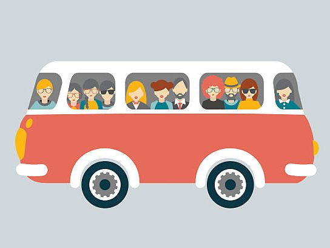

Confirma tu asistencia
Buses
Cuando confirmes tu asistencia por favor indícanos si estarías interesado en el servicio de buses para que podamos organizarlo de la mejor forma posible. Los buses saldrían de las siguientes localizaciones:
Lugo
Villalba (ciudad y Hotel Spa Attica)
As Pontes
Todavía no sabemos los horarios ni los lugares de partida, pero os mantendremos informados puntualmente en cuanto tengamos novedades.
